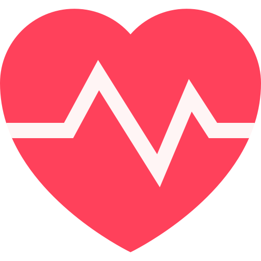
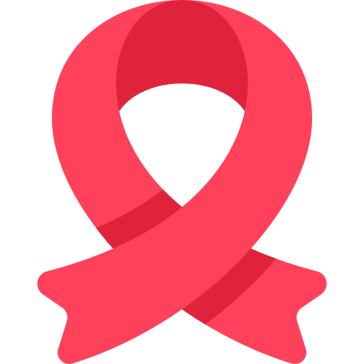
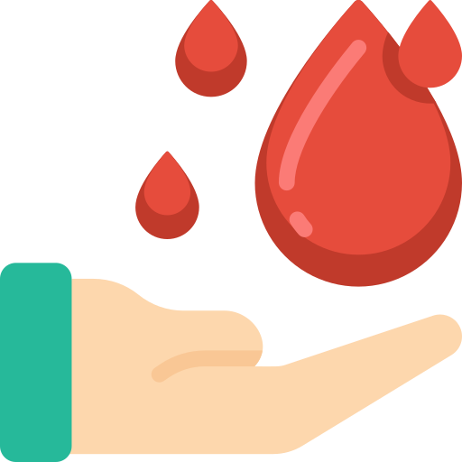
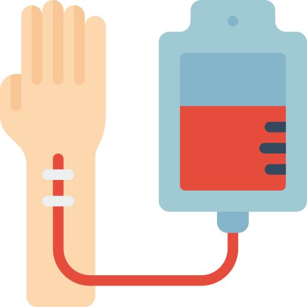

Uma doação pode salvar 10 vidas
DoarBeneficios de doar sangue
Alem de salvar vidas voce tem uma serie de vantagens!

Reduz o Risco de Doença Cardíaca
Em um estudo recente, descobriu-se que doadores regulares de sangue (1 vez por ano) são 88% menos propensos a terem ataques cardíacos.

Reduz o Risco de Câncer
A doação de forma regular também está associada a uma redução na incidência de diversos tipos de câncer, incluindo câncer de fígado, pulmão, cólon e garganta.
Mini-Checkup Gratuito
Imediatamente antes do exame, você terá a oportunidade de saber sobre anomalias na sua pressão e no nível de hemoglobina. Além disso, uma amostra do seu sangue é coletada, e são executados exames para detectar várias doenças
Você pode ajudar também

2,400,000
Doações em 2019

3,300,000
Doadores
32
Hemocentros no Brasil